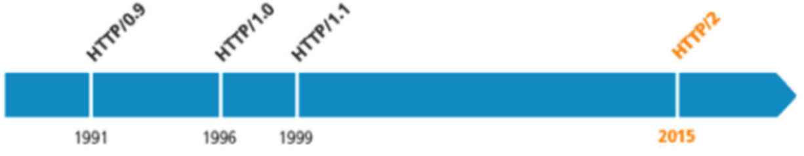
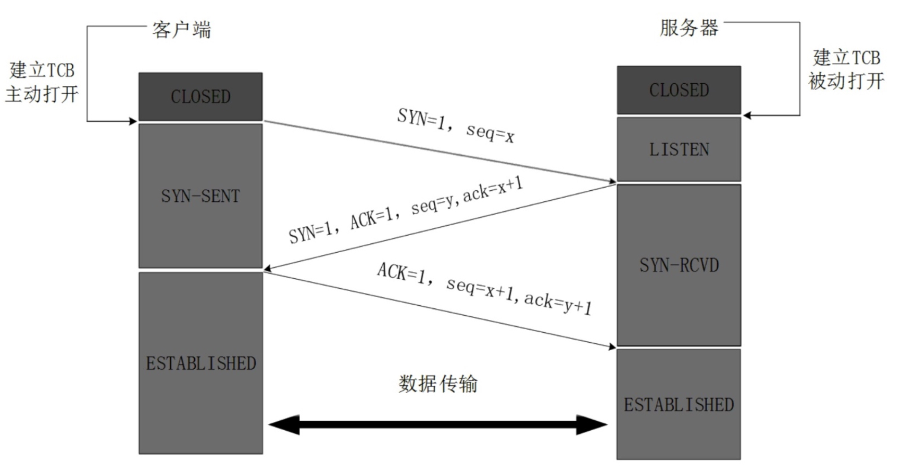
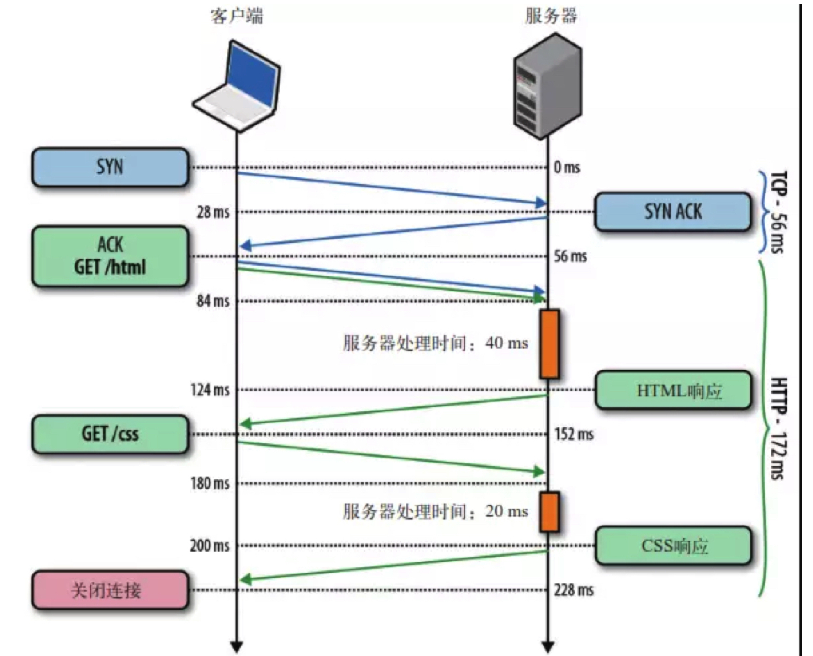
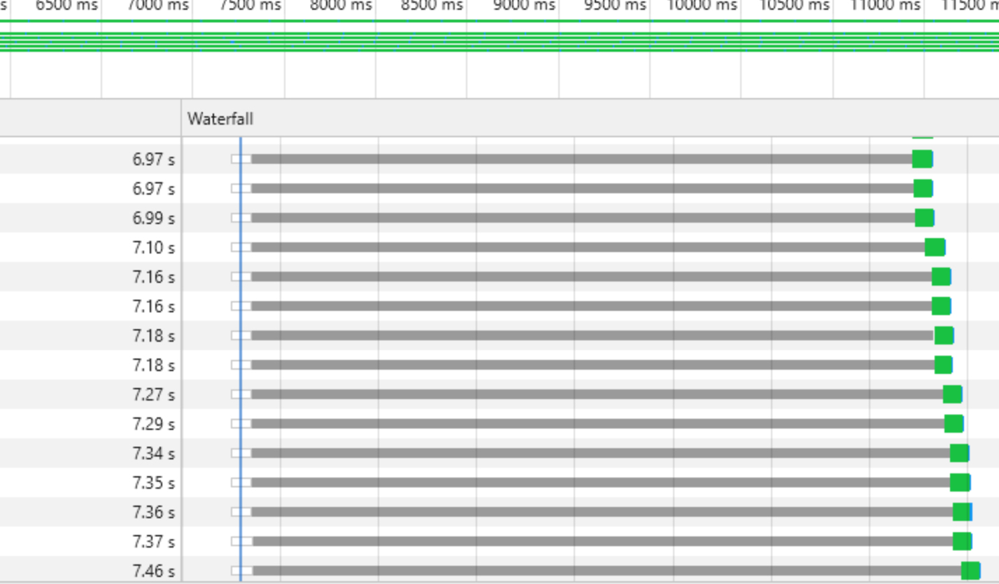
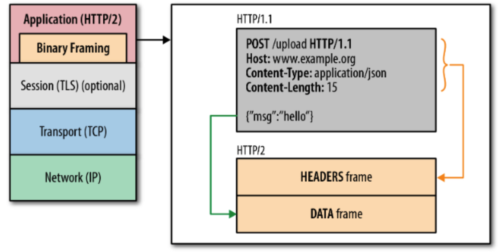
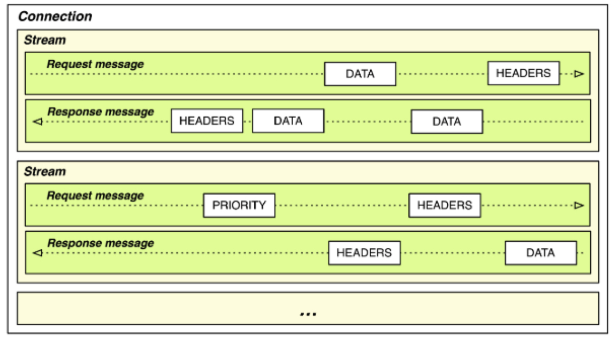
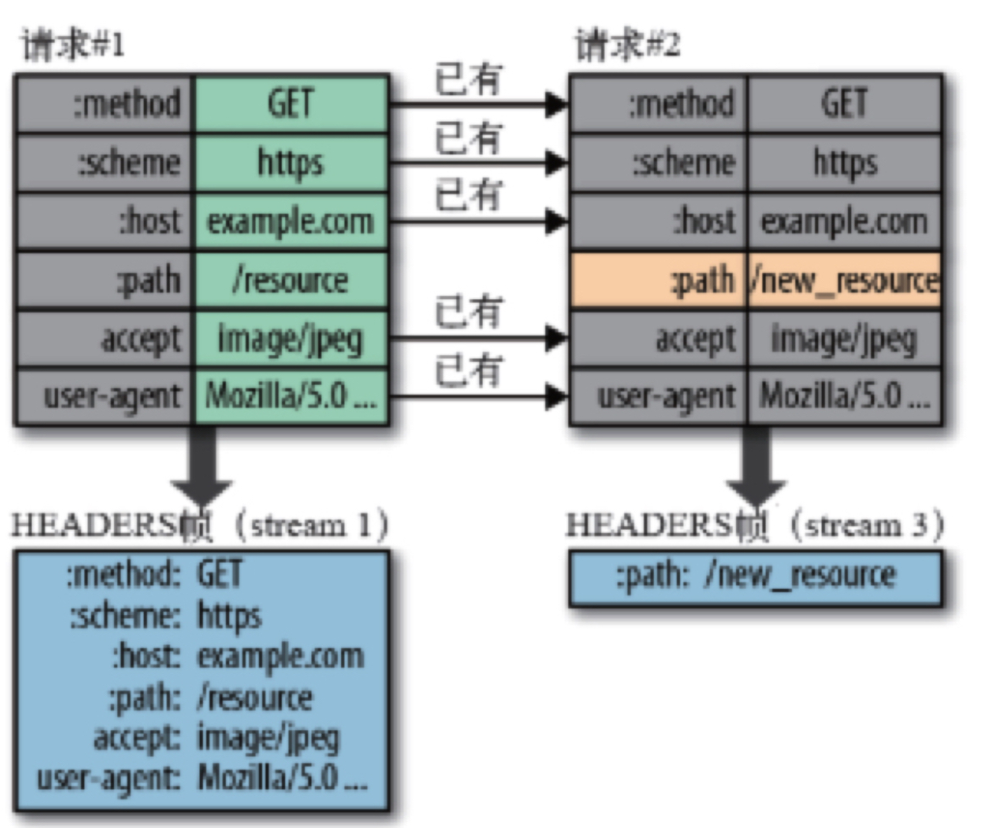
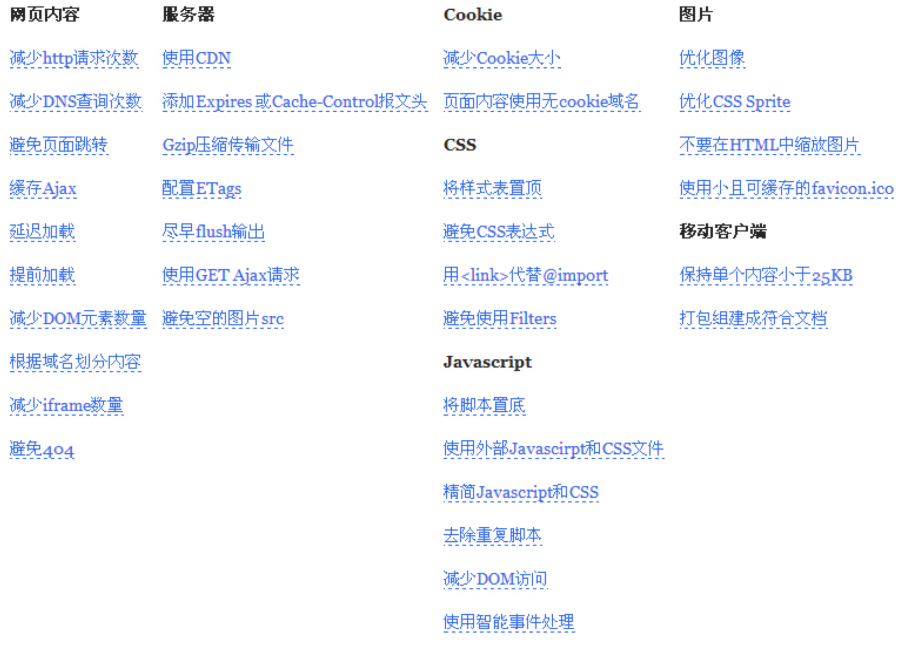

本文整理在，我的github 上。欢迎Star。
在HTTP建立之初，主要是为了传输超文本标记语言(HTML)文档。随着时代的发展，也进行了若干次演进。下图是各个版本发布的时间轴。

目前为止，使用最为广泛的是http1.1，http1.0应该比较少了，最新的是http2。
这篇博文也主要，围绕着1.0、1.1、2.0三个版本进行介绍。
http1.0不会复用tcp链接，每次请求都会打开、断开一条链接。
如果您看过我前阵子整理的关于TCP的博文，您就会知道，TCP是有延迟响应机制的，每次请求并不会马上返回。这算是http1.0性能不好的一个原因吧。

http/1.1当前普及程度最高的http版本。
到了http/1.1版本，tcp链接可以持久保持了（也就说，一段时间内，一个tcp链接会等到同一个域名下的所有资源加载完后再断开。）

在保持tcp链接的基础上，引入了http管道的机制，差点实现了多路复用。
通过一条tcp链接请求资源，只有在上一个请求完成后，才能发出下一个请求。也就是上图描述的情形。
客户端不会等待响应，直接并发N个请求。但是，http/1.x有严格的串行返回响应机制。通俗的讲就是：请求时，不用等上一个完成；但响应时，必须严格按照顺序返回。
通过开发者工具，你就可以观察到这一点。

基于以上描述，使用“ HTTP 管道”技术时，万一第一个响应时间很长，那么后面的响应处理完了也无法发送，只能被缓存起来，占用服务器内存，这就是传说中的“队首阻塞（head of line blocking）”。
这也是http/1.x下，多数网络体验不好的原因。
在介绍http/2.0之前，我们来先看一份Akamai公司提供的一个官方演示。
这里用了361（19*19）张图片，分别使用http/1.1，http/2.0两种版本的协议进行对比。可以直观的感受到，http/2.0比http/1.0快出5倍左右的速度。
考虑到您可能需要分别用开发者工具仔细查看下两个版本，我已经帮你找好了两个版本对应的链接。（不客气）
那http/2.0究竟引入了哪些机制、特性才达到目前的加速效果呢？简答的说可以概括成。
服务器推送（server Push）
引入了二进制分帧层，就不再是文本传输了，而是数据帧（二进制）。
注意：HTTP原本的语义，方法、动词、首部都不受影响。仅仅是传输期间的数据格式变化了。

http/2规定了10种不同的帧。
如上图，分针层会把 开始行，首部行分割到HEADERS帧，正文实体分割到DATA帧。
TCP 连接在客户端和服务器间建立了一条运输的通道，可以双向通行，当一端要向另一端发送消息时，会先把这个消息拆分成几部分（帧），然后通过发起一个流对这些帧进行发送，最后在另一端将同一个流的帧重新组合。
这里涉及了以下概念。
流：已建立的连接上的双向字节流
消息：与逻辑消息对应的完整的一系列数据帧
帧：HTTP/2 通信的最小单位，每个帧包含帧首部

其中帧对数据进行顺序标识，这样浏览器收到数据之后，就可以按照序列对数据进行合并，而不会出现合并后数据错乱的情况。同样是因为有了序列，服务器就可以并行的传输数据，这就是流所做的事情。
HTTP/2对同一域名下所有请求都是基于流，也就是说同一域名不管访问多少文件，也只建立一路连接。同样Apache的最大连接数为300，因为有了这个新特性，最大的并发就可以提升到300，比原来提升了6倍！
在服务器和客户端各维护一个“首部表”，表中用索引代表首部名，或者首部键 - 值对，上一次发送两端都会记住已发送过哪些首部，下一次发送只需要传输差异的数据，相同的数据直接用索引表示即可。

首部压缩，可以解决http头臃肿的问题。
服务器可以对一个客户端请求发送多个响应。也就是说，除了对最初请求的响应外，服务器还可以额外向客户端推送资源。
这里就涉及到了另一个帧类型：PUSH_PROMISE帧。
举个栗子，当客户端请求index.html时，服务器会同时推送style.css,index.js对应的PUSH_PROMISE帧。客户端可以直接缓存起来。
个人觉得前端的性能优化，应该主要从两个方面。加载速度和流畅运行。
原引，在网上看到的一段话：
网页不仅应该被快速加载，同时还应该流畅运行，比如快速响应的交互，如丝般顺滑的动画等。
当然，今天的主题是讨论网路协议，那我们只谈加载速度。
基于http1.x的相关特性，可爱的前端们提出了很多颇具成效的优化方案。（精灵图，多域名加载等等）其中，比较著名的雅虎军规，很多人应道都知道，这里有一张整理好的图。

在http/2的基础上，很多http/1.x要优化的问题，都不存在了。问题都不存在了，问题的优化方案也就不存在了。
这里插一句，我始终坚信的一个观点是：没有任何优化手段是不需要付出代价的。是药三分毒，无非是取舍罢了。
在http/1.x时代，http并没有最大程度上利用好tcp链接。虽然http/1.1里有了http管道，但其也带来了队首阻塞等问题，同时也要受队列大小的限制。所以我们要通过合并文件的方式减少http链接数量。
不错，减少http请求数量的确能起到优化的作用，但与此同时，也有很多弊端：
以上，就是”合并css方案"、“合并js方案”、“精灵图方案”的优势与弊端。
在http/1.x基础上，分域名有两个好处。
在http/2上，对于这些问题
如果页面需要多种数据，我们会尽量将数据汇总到一个接口，以减少http请求数量。
这种做法，几乎违背了各种程序设计规范，比如“单一职责原则”等等，接口很难复用，维护成本高。
这种方案在http/2下，明显弊端>优势了。
插一句《RFC7540》是官方对http2.0规格的描述，比较权威。